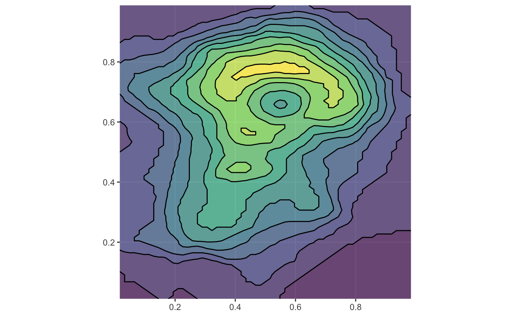
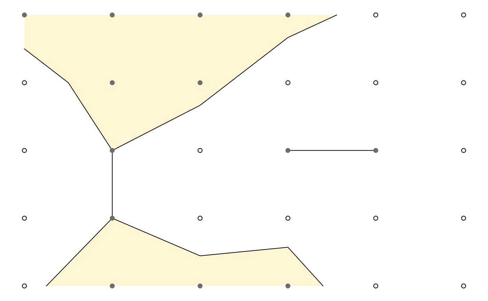
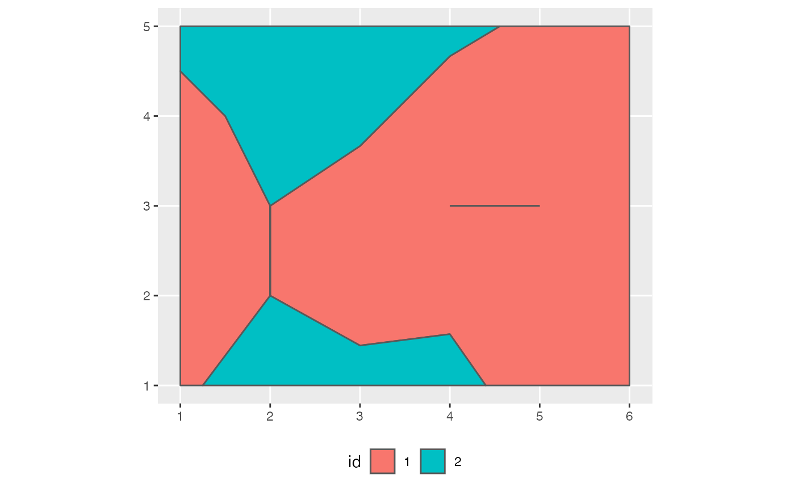
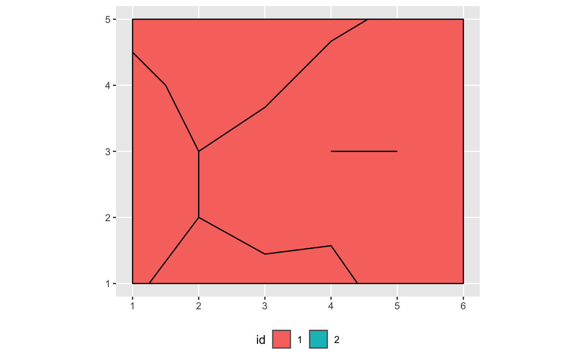
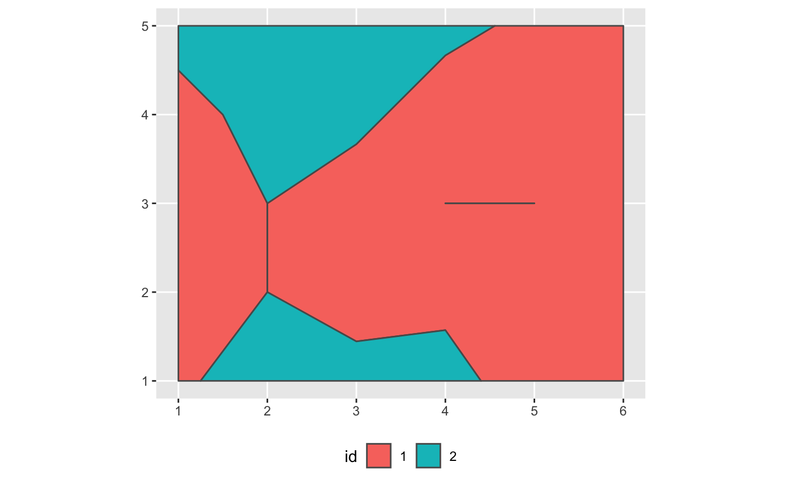

For geospatial applications, it may be convenient to convert isolines and isobands into simple features. This can be done with the function iso_to_sfg(), which converts an isolines or isobands object into an sf geometry collection. This converted object can then be further processed with functions from the sf package. For example, we can add them to an sf data frame and plot with ggplot2.
library(isoband)
library(ggplot2)
suppressWarnings(library(sf))
#> Linking to GEOS 3.8.1, GDAL 3.2.1, PROJ 7.2.1
m <- volcano
# make isobands
b <- isobands((1:ncol(m))/(ncol(m)+1), (nrow(m):1)/(nrow(m)+1), m, 10*(9:19), 10*(10:20))
bands <- iso_to_sfg(b)
data_bands <- st_sf(
level = 1:length(bands),
geometry = st_sfc(bands)
)
# make isolines
l <- isolines((1:ncol(m))/(ncol(m)+1), (nrow(m):1)/(nrow(m)+1), m, 10*(10:19))
lines <- iso_to_sfg(l)
data_lines <- st_sf(
level = 2:(length(lines)+1),
geometry = st_sfc(lines)
)
# plot with geom_sf()
ggplot() +
geom_sf(data = data_bands, aes(fill = level), color = NA, alpha = 0.7) +
geom_sf(data = data_lines, color = "black") +
scale_fill_viridis_c(guide = "none") +
coord_sf(expand = FALSE)
As a second application of this feature, we will take a photograph and convert it into a set of polygons that we plot with false colors.
suppressMessages(library(magick))
# helper function to convert a raster image into isobands
sf_from_image <- function(image) {
image_gray <- image %>% image_quantize(colorspace = "gray")
image_raster <- as.raster(image_gray)
d <- dim(image_raster)
m <- matrix(c((255-col2rgb(image_raster)[1,])), nrow = d[1], ncol = d[2], byrow = TRUE)
b <- isobands(1:d[2], d[1]:1, m, 20*(0:13), 20*(1:14))
bands <- iso_to_sfg(b)
data <- st_sf(
level = letters[1:length(bands)],
geometry = st_sfc(bands)
)
}
# load the image, convert, and plot
img <- image_resize(image_read(system.file("extdata", "ocean-cat.jpg", package = "isoband")), "200x200")
img_sf <- sf_from_image(img)
ggplot(img_sf) +
geom_sf(color = "blue", fill = NA, size = 0.05) +
coord_sf(expand = FALSE) +
theme_gray() +
theme(
axis.ticks = element_blank(),
axis.text = element_blank(),
axis.title = element_blank(),
axis.ticks.length = grid::unit(0, "pt"),
plot.margin = margin(0, 0, 0, 0)
)
ggplot(img_sf) +
geom_sf(aes(fill = level, color = level)) +
coord_sf(expand = FALSE) +
theme_void() +
scale_fill_viridis_d(
aesthetics = c("color", "fill"), option = "B", guide = "none",
direction = -1
)Invalid geometries
When converting isolines or isobands into simple features, we can end up with geometries that are considered invalid. These are generally cases where isobands have portions with zero width or height, for example because a set of values in a single row or column is exactly equal to the lower boundary of an isoband. (The lower boundary of an isoband is included in that band, while the upper boundary is excluded.) As an example, consider the following elevation matrix, which yields one isoband with zero width and one with zero height.
m <- matrix(
c(1.5, 1.5, 1.5, 1.5, 0.6, 0,
0.5, 1.5, 1.5, 0, 0, 0,
0, 1, 0, 1, 1, 0,
0, 1, 0, 0.7, 0, 0,
0.9, 1.3, 1.8, 1.4, 0.4, 0
),
nrow = 5, ncol = 6, byrow = TRUE
)
plot_iso(m, 1, 2)
The isobands are correct, but conversion into simple features yields invalid geometries.
b <- isobands(x = 1:6, y = 5:1, z = m, levels_low = 0:1, levels_high = 1:2)
bands <- iso_to_sfg(b)
iso <- st_sf(
id = factor(1:length(bands)),
geometry = st_sfc(bands)
)
st_is_valid(iso, reason = TRUE)
#> [1] "Too few points in geometry component[4 3]"
#> [2] "Too few points in geometry component[4 3]"Invalid geometries can cause problems in some applications, even though they usually can be plotted with geom_sf().

We can repair invalid geometries using st_make_valid():
if (sf_extSoftVersion()["GEOS"] >= "3.8.0") { # requires GEOS >= 3.8.0
iso_valid <- st_make_valid(iso)
st_is_valid(iso_valid, reason=TRUE)
}
#> [1] "Valid Geometry" "Valid Geometry"The resulting plot is unchanged. (This is not always the case; sometimes single lines between two polygons are eliminated by st_make_valid().)
if (sf_extSoftVersion()["GEOS"] >= "3.8.0") { # requires GEOS >= 3.8.0
ggplot(iso_valid, aes(fill = id)) +
geom_sf() +
theme(legend.position = "bottom")
}
Alternatively, we can avoid invalid geometries if we can guarantee that no elevation value ever is exactly equal to an isoband boundary. For example, if we shift all data values by a tiny amount (here, 1e-10) so they don’t coincide with the band limits, no invalid geometries are generated. The resulting plot again looks visually unchanged.
b <- isobands(x = 1:6, y = 5:1, z = m + 1e-10, levels_low = 0:1, levels_high = 1:2)
bands <- iso_to_sfg(b)
iso <- st_sf(id = factor(1:length(bands)), geometry = st_sfc(bands))
st_is_valid(iso, reason = TRUE)
#> [1] "Valid Geometry" "Valid Geometry"
ggplot(iso, aes(fill = id)) +
geom_sf() +
theme(legend.position = "bottom")